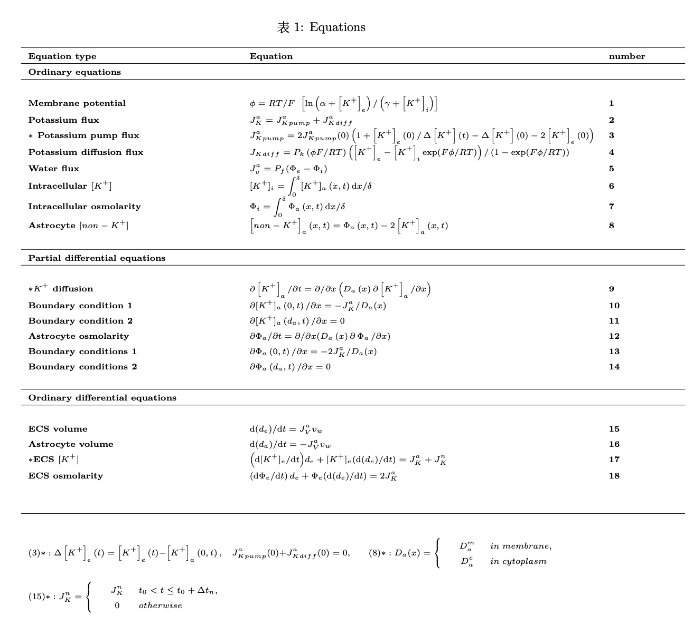

I initiated and led this undergraduate research project after reading differing experimental observations of potassium dynamics associated with aquaporin-4 (AQP4). Under the supervision of Professor Ying Wu at Xi'an Jiaotong University, I used a simplified computational model to compare possible contributions to those observations.
From an experimental puzzle to a model
AQP4 is associated with water transport, while extracellular potassium dynamics also depend on factors such as potassium release and the space into which ions are released. I wanted to examine how these factors could affect the behaviour of a model, rather than attributing every observed change to a single parameter.
The project asked how changes in water permeability, neuronal potassium release and extracellular-space volume could contribute to differences in potassium dynamics.
Extending the computational setting
I extended a published astrocyte model to a one-dimensional chain and implemented coupled ordinary and partial differential equations in MATLAB. Controlled simulations provided a way to vary candidate factors and compare their consequences within the model's assumptions.

The chain formulation allowed spatial relationships to enter the question, but remained a simplified description. In particular, the work did not implement the complete set of potassium-return and spatial-buffering processes. These omissions matter when relating the simulations to physiological clearance.
My contribution
I identified the question through independent reading, conceived the project, led the team, and carried out the principal modelling, programming and analysis. The project received National-Level support from the National Undergraduate Innovation and Entrepreneurship Training Program and was presented at ICVE 2021.
What I took from the project
This work introduced me to a research pattern I still value: use observations to formulate alternative explanations, make their assumptions explicit, and compare the consequences of controlled changes. It also made clear why close contact with experiments is important. A simulation can separate factors mathematically, while its biological interpretation depends on how the original measurements were made and what the model leaves out.
Related conference paper
Luo, Z., Li, L., Wei, G., Tian, Y., Xu, B., Du, M., & Wu, Y. (2021). Multi-astrocyte chain dynamics modelling of aquaporin-4-dependent extracellular space potassium diffusion. Proceedings of the 8th International Conference on Vibration Engineering.